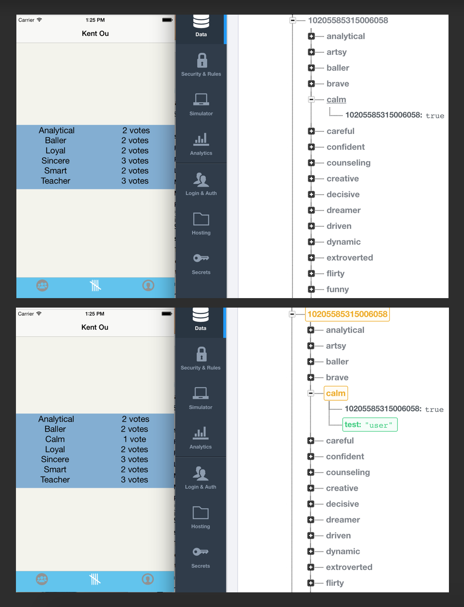

ReactNative & Firebase
We have doing a senior thesis project for Telegraph Academy's first class which builds a simple mobile app using React Native, a new framework/tool which has been open source for 3 months for iOS and a few days for Android. I'm pretty excited to take our nearly complete application for iOS and port it over to Android... but first thing's first, we have to make the database talk to the application's front end.
I've been using firebase for small projects and I was really interested in using firebase for our project because our datastructure is very small and easy to manage. The queries needed are very limited and the JSON tree format of firebase is perfect for what we want to do.
We have no servers in our application.* Currently we use react references and listen for changes directly where is needed. There are libraries such as react-fire, angular-fire, et al., but there were none for us when we started this project, so we proceeded to write out our calls in vanilla RN.
This is what we had initially for fetching our data.
fetchData () {
return(
fetch(REQUEST_URL)
.then((response) => response.json())
.then((responseData) => {
this.setState({
traits: responseData[userID],
loaded: true
})
}).done()
)
},
render() {
if (!this.state.loaded) {
return this.renderLoadingView();
}
var traits = this.state.traits;
return this.renderTraits(traits);
}
The REQUEST_URL was our firebase url of interest. Which is all fine and dandy, except that this only works when we start our application. We wanted live updating and the best way to do it is to place a listener right in a certain spot...
render() {
var that = this;
if (!this.state.loaded) {
ref.on("value", function(snapshot) {
that.setState({
traits: snapshot.val().pond[userID],
loaded:true});
});
return this.renderLoadingView();
}
traits = this.state.traits;
return this.renderTraits(traits);
}
"var that = this" resets the context. The database ref listens and uses that.setState to change the view and update our information. It would have been nice to have a react native firebase library to be written out for us, but thankfully we were able to use vanilla firebase and react native to address our pretty simple needs. This is probably the best way, we've had no mistriggers using this approach.
Here's a demo! The top file shows the iOS simulator of the app on the left and the open firebase database on the right. I'm manually adding information in the database and the update of the information triggers and causes the bottom image. The same works when the application sends information to update the database from within the app. It's pretty exciting to do all this without sending this information through a server, just listeners and firebase calls going back and forth. I'll add a post discussing those triggers soon!

In an other part of the application we access firebase using a function between the (this.state.loaded) and the ('return loadingView') but that has lead to some funny errors when the database is changed (see some database misfires below) Our plan is the change all calls over to the style above.

Send me an email if you are considering doing something using both of these technologies and are having trouble! I have read that firebase is working on a library so this sort of technology interface might have a simpler connection soon.